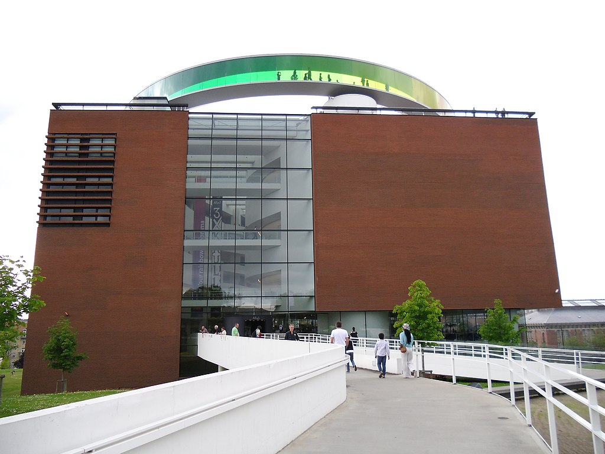
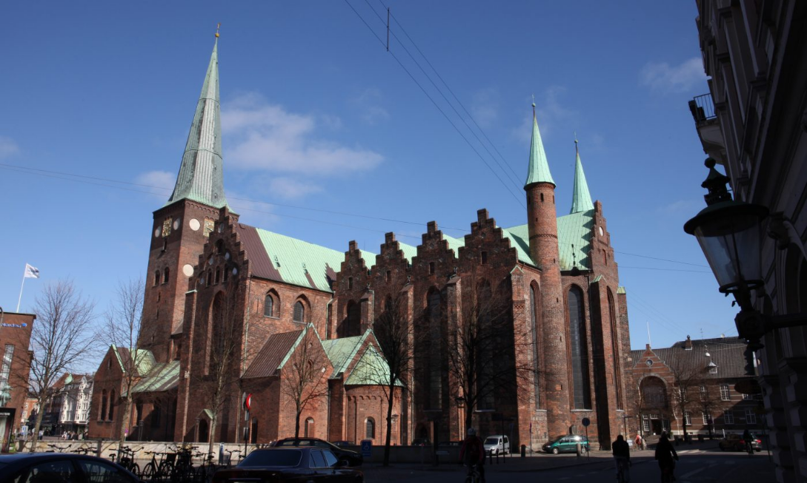

Learn About Aarhus
Aarhus is the second largest city in Denmark. The city has an
estimated population of 285,273 as of 2022. Aarhus goes back
to at least the late 8th century and is one of the oldest towns in
Denmark. The Latin Quarter is the oldest part of town, and it
dates back to the 1400s. Aarhus used to be a Viking settlement
called Aros, now there is a museum in midtown called Aros.

popular among the Vikings and in the middle age. In Aarhus you
will find the longest church in all of Denmark. The cathedral is 93
meters long. It was built in the 15th century in roman style.

was changed to “Å”, in 2010 the city council wanted the spelling to
be changed back to the first one, and in 2011 it became effective.